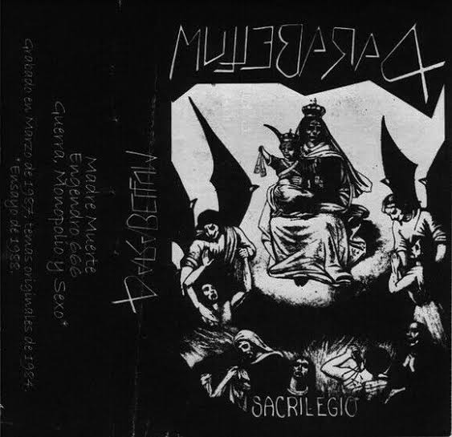

HISTORIA
El Black metal, género musical conocido por su estética sombría, sus sonidos extremos y sus líricas a menudo provocadoras, ha dejado una huella única en América Latina, aunque su presencia no ha sido tan prominente en los medios como la escena Noruega, la evolución del black metal en esta región ha sido fascinante y rica en diversidad. A continuación, se explora el desarrollo del black metal en América Latina, destacando hitos clave y la diversidad de influencias culturales que han dado forma a su identidad única.
1980s-1990s: Pioneros y los Primeros Pasos Oscuros: En las décadas de 1980 y 1990, la semilla del black metal se sembró en América Latina. Brasil se destacó con bandas pioneras como Sarcofago y Mystifier, que adoptaron el sonido crudo y agresivo del black metal noruego y lo fusionaron con sus propias influencias culturales. Estas bandas sentaron las bases para lo que vendría después, dejando una marca indeleble en la historia del metal extremo latinoamericano.
Colombia y el Ascenso de Inquisition: En la década de 1990, Colombia se convirtió en el hogar de una de las bandas más influyentes de la escena global del black metal: Inquisition. Aunque la banda se formó originalmente en los Estados Unidos, su traslado a Colombia coincidió con un período de crecimiento significativo en su carrera. Inquisition llevó la estética del black metal colombiano a audiencias internacionales, demostrando que la geografía no define la calidad artística.
Chile: Fusionando Estilos y Explorando Fronteras Creativas: Chile ha sido una tierra fértil para la experimentación en el black metal. Durante las décadas de 1980 y 1990, bandas como Death Yell y Atomic Aggressor fusionaron elementos de black y death metal, creando un sonido distintivo. Esta fusión de estilos no solo demostró la versatilidad del black metal chileno, sino que también subrayó la voluntad de las bandas de explorar nuevas fronteras creativas.México y su Ascenso Global: México emergió como una fuerza importante en la escena del black metal en las últimas décadas, bandas como Xibalba Itzaes y Funereal Moon llevaron el estandarte del black metal mexicano a nivel internacional. Además de producir música extrema de alta calidad, México se convirtió en un punto focal para festivales y eventos dedicados al black metal, consolidando su posición en la escena global.
Siglo XXI: La Diversidad en Ascenso: En el siglo XXI, la escena del black metal en América Latina ha experimentado un renacimiento, países como Argentina han contribuido con nuevas perspectivas y estilos, explorando la relación entre la estética oscura del black metal y las influencias culturales locales. La diversidad en la escena actual refleja el crecimiento y la madurez del género en la región.
UN FUTURO OSCURO E INSPIRADOR: El desarrollo del black metal en América Latina ha sido un viaje fascinante, desde los primeros días de influencia Noruega hasta la diversidad y originalidad que caracterizan la escena actual. A medida que las bandas continúan explorando nuevas expresiones artísticas y fusionando influencias culturales, el black metal latinoamericano promete un futuro oscuro e inspirador, enriqueciendo aún más la rica tradición del metal extremo a nivel global.
BANDAS
Exite una gran variedad de artistas latinoamericanos en la escena, la diversidad de bandas y proyectos posicionan a Lationoamerica como una de las regiones con mayor numero de exponentes a nivel mundial, a continuación te muestro algunas de estas bandas:
Sarcofago fue una influyente banda de black metal originaria de Brasil. Se formó en 1985 en Belo Horizonte, Minas Gerais, y es conocida por ser una de las primeras bandas en adoptar y desarrollar el sonido distintivo del black metal extremo. A lo largo de su carrera, Sarcofago influyó en numerosas bandas de black metal y extremo. La banda fue fundada por Wagner "Antichrist" Lamounier: Voz, Guitarra y Gerald "Incubus" Minelli: Batería, y sus trabajos mas destacados son los albumes I.N.R.I. (1987), Rotting (1989) y The Laws of Scourge (1991). La banda se separo en los años 90s, sin embargo su legado la a convertido en una banda de culto entre los fanaticos del Black metal. Un dato interesante es que hay muchas disqueras y promotoras interesadas en que la banda vuelva a su actividad, tal es el caso de Wacken y Nuclear Blast, asi mismo durante su tiempo de actividad la banda tuvo una relacion muy estrecha con Mayhem mediante el intercambio de cartas, incluso existen fotografias en las que Dead (mitico vocalista de Mayhem) usa playeras con el logo de Sarcofago. Lamentablemente (como fan) la banda no tiene intenciones de volver a los escenarios, principalmente por que cada integrante ha deicidio dejar la musica o bien continuar en proyectos individuales.
Parabellum (del latin "para la guerra") fue una banda Colombiana formada en 1983 por Ramón Reinaldo Restrepo en la voz, Carlos Mario Pérez Ramírez "La Bruja" y John Jairo Martínez en las guitarras y Tomás Cipriano Álvarez en la bateria. Es conciderada una de las bandas precursoras de black metal, siendo una influencia importante para bandas europeas como Mayhem y Dark Throne; Parabellum comenzo siendo una banda de Thrash metal, cuya tematica principal de sus letras era la guerra, conforme pasaron los años la banda fue explorando con sonidos más densos y rapidos, lo cual los diferencio rapidamente de las bandas de heavy metal del circuito underground de Colombia, lo cual les dio proyección en otros paises de Latinoamerica, tal fue su relevancia y poplarida que la banda se dio a conocer en los circuitos underground de Noruega (conciderada la cuna del balck metal). A pesar del exito, la banda se disolvio en 1991 debido a diversos problemas entre los miembros de la banda y el fallecimiento de John Jairo en 1998. A pesar de su corta trayectoria, la banda publico 4 discos, "Rehearsal" de 1984, "Sacrilegio" de 1987, "Mutación por radiación" de 1988 y "Tempus Mortis" un compilatorio de 2005. que reflejan la huella imborrable de Parabellum en la historia del metal extremo.
Mystifier ("Mistificador") es una banda brasileña de black metal formada en 1989 en Salvador, Bahía, son conocidos por ser una de las bandas más antiguas y destacadas de la escena black metal en América del Sur. La formación original de la banda incluía a Beelzeebubth en la voz, Behemoth en la guitarra, Krika en el bajo y Lucifuge Rofocale en la batería. El álbum debut de Mystifier, "Wicca" (1992), es considerado un clásico del black metal sudamericano. Otros álbumes notables incluyen "Göetia" (1993), "The World Is So Good That Who Made It Doesn't Live Here" (1996) y "Profanus" (2001). Los inicios de Mystifier fueron muy duros debido a la censura y persecusion por parte de las comunidades y medios más conservadores, por lo que sus presentaciones solian ser canceladas o se les cerraban las puertas de las disqueras, a pesar de ello lograron abrir las puertas a una inmensa comudidad en su pais.
Funereal Moon ("Luna Funebre") es una banda de black metal atmosferico formada en 1993 en la Ciudad de México por el músico "Ismael", siendo el unico miembro permanente, la banda es reconocida por ser una de las primeras en la escena del black metal underground mexicano, la banda se caracteriza por su nusica y estetica ritualista, siendo una banda inovadora que se aleja de las influencias musicales de la escena escandinava. Funereal Moon es un referente en el metal extremo underground de America latina, debido a que su musica se aproxima más a lo experimental y aborda temas como la brujeria, el satanismo, la depresion, la soledad, el nihilismo y la oscuridad, sus proyectos más aclamados son "Beneath the Cursed Light of a Spectral Moon" de 1994 y "Perpetual Image of Doom" de 2009, ambos proyectos de larga duracion.
Hortor ("exhortar" en Latin) es una banda de black metal cristiano originaria de México, fue formada en 2004 por Azmaveth (guitarra y voz), Varme (bajo) y Nokturnalwolf (bateria) Hortor se destaca por combinar elementos del black metal con letras y temáticas cristianas, lo cual es lo menos común en el género, ya que desde sus origenes se asocia con temáticas anticristianas o satánicas. Sin embargo la música de Hortor tiende a ser rápida, intensa y atmosférica, características típicas del black metal, de igual manera la imagen de la banda proyecta la estetica de las bandas mas tradicionales. A lo largo de su exitencia han lanzado varios álbumes de larga duracion y calidad excepcional, asi mismo su enfoque en la espiritualidad cristiana le ha valido un lugar único en la escena del metal extremo, sus albumes destacables son: "Ancient Satanic Rituals Are Crushed in Dust" de 2006, “Decapitación Absoluta Al Falso Profeta” de 2007, "Destroyer of the Iniquities" de 2010 y "Dharma Escencia de Impureza" de 2018. Como pueden ver es una banda fuera de serie, ya que desconcierta debido a su estetica y tematica de sus letras, lo cual ha traido ataques por parte de los fanaticos del Black Metal mas puristas e incluso de los sectores religiosos, a pesar de ello la banda defiende su fé y creencias, bajo la idea de llevar la palabra de Dios a los sectores mas extremos.
Thy Antichrist ("Vuestro anticristo") es una banda de black metal originaria de Colombia, Fue formada en 1998 por el vocalista y líder Andrés Vargas, conocido como "Antichrist 666", su formacion actual la componen Frost Giant bajista, Abyssus como guitarrista y Oricuss en la Batería, la banda se ha destacado en la escena del black metal por su enfoque en la oscuridad, la filosofía antirreligiosa, la combinación de elementos extremos en su música y su puesta en escena que resulta ser un espectaculo incomparable, aludiendo a lo ritualistico y performatico, THY ANTICHRIST es ademas una de las bandas con mas reconocimiento y trayectoria a nivel mundial, tanto asi que ha logrado estar en las filas de "Napalm records" (una de las discograficas mas importantes en la escena metalera). A lo largo de los años, Thy Antichrist ha lanzado varios álbumes y ha participado en numerosos eventos y festivales de metal extremo. Algunos de sus álbumes son: "Wicked Testimonies" de 2004, "Human Pandemonium" de 2007 y "Wrath of the Beast" de 2018. Actualmente la banda reside en Estados Unidos, pais donde encontraron el exito en la escena.
Signs of the evil ("Señales del Mal") es una banda originaria de Lima, Peru, formada en el 2002 por el bajista Torment, el guitarrista Hellthor, el vocalista Belcifer y An Hell en la bateria; a lo largo de los años han experimentado con sonidos extremos y tematicas principalmente anticristianas, belicas y satanicas, su sonido es verdaderamente extremo con ritmos rapidos y agresivos y voces guturales y desgarradoras, Signs of the evil es una de las bandas mas pesadas y brutales en la escena del metal extremo latinoamericano, sus trabajos mas destacables son "Crucificción de la peste cristiana" de 2009 y "Christian Blood for Satan" de 2014. Son sin duda una de las bandas mas importantes y precursoras en el genero, asi mismo han luchado por la libre expresion de las bandas en Latinoamerica.

ERESHKIGAL ("Diosa mesopotamica del inframundo") es una banda mexicana de black metal formada en 1993 en la Ciudad de México, integrada por Marganor Bestial Invocator en la bateria, Demniack en la guitarra lider, Forgotten en la voz, Agöth Euterpe en la guitarra, Adrián Baelrath Holder como musico de soporte y Embryonic Evil en la guitarra, la musica de Ereshkigal es potente y devastadora con notas acusticas densas y voces desagarradoras, que dotan a la banda de un sonido oscuro, profundo y lleno de misticismo, motivo por el que se han convertido en una de las bandas mexicanas más importantes de black metal. A lo largo de su trayectoria han recorrido diversos paises de Latinoamerica y Europa, y han publicado una lista extensa de albumes, demos y singles, entre los cuales destacan "Memories" de 2016, "Tragedies of Death...The After Life" de 2001 y "Shadow´s Land" de 2006

Inquisition ("Inquisición") es una banda de Black Metal originaria de Cali, Colombia, fue fundada en 1988 por Jason Wilson, también conocido como Dagon. Aunque sus inicios se caracterizaron por ser una banda de Thrash Metal, en 1994 experimentaron una transformación hacia un estilo Raw Black Metal. Actualmente, la banda tiene su base en la ciudad de Seattle. El distintivo sonido de Inquisition se compone de riffs lentos, profundos y oscuros, entrelazados con cambios abruptos hacia tempos más rápidos que incluyen solos de guitarra melódicos. Su estilo clásico refleja una clara influencia de la "vieja escuela" del thrash metal, fusionada con el black metal más oscuro y caótico, caracterizado por el uso del tremolo en tonos bajos. Además, el sonido de Inquisition destaca por incorporar el estilo "Blast beat" de Incubus. Dagon, quien lidera la banda, presenta una voz única en cada álbum, con el objetivo de generar una sensación de trance en el oyente. En sus declaraciones, ha mencionado que su enfoque vocal no busca imitar la voz humana, sino más bien se asemeja a la voz de una entidad etérea en forma demoníaca, emitiendo un mensaje incomprensible que se percibe como un grito desde lo más profundo. Algunos de sus albumes destacados son: "Into the Infernal Regions of the Ancient Cult" de 1998 y "Obscure Verses for the Multiverse" de 2013. Inquisition es una de las bandas latinoamericanas con mayor presencia en la escena internacional, lo que los ha llevado a festivales en varios paises, sin lugar a dudas es una de las bandas mas importantes actualmente.
Balam Akab (del Maya B'alam, jaguar y Aga, noche, "jaguar de la noche") es una banda Mexicana de metal extremo que fusiona el Black Metal con el Death Metal, fue formada en 1999, su actual formacion consta de Enrique Daniel en la guitarra, Alejandro en la voz, Omar J.D en la batéria y Polonio Bello en el bajo, la banda toma inspiracion del misticismo prehispanico de la cultura Maya, principalmente en los textos descritos en el Popol Vuh (libro sagrado Maya), por este motivo se suele referir a la banda como Folk Metal, es hasta hoy en dia una de las bandas mas aclamadas en latinoamerica; su musica se caracteriza por ser pesada, rapida y oscura, asi mismo abordan una tematica ampliamente contestataria en contra de la colonizacion de los pueblos originarios, enalteciendo a las tradiciones y creencias de los pueblos originarios, cabe mencionar que la mayoria de sus producciones son independientes, lo cual les da un aire de Black Metal "old school", entre sus albumes destacan: "Xibalbá" de 2006, "Sacrificio" de 2018 y "Revolucion" 2023, no cabe duda de que son una de las bandas con una de las propuestas mas originales e interesantes en la escena.
Avzhia (666 AVZHIA, "Demonio de la destruccion") Es una banda precursora del Black Metal originaria de México. Su primer demo en estudio, titulado "Immense Dark Sky", fue grabado en 1993 y lanzado en 1994 bajo el sello de Bellphegot Records. En ese período, la formación incluía a Demogorgon en la batería, Gorgon en la guitarra líder y bajo, Ialdabaoth en la guitarra rítmica, y Goat como vocalista. En 1996, la banda presenta "Dark Emperors" bajo los sellos Storm Productions y Brujo Records. Durante este tiempo, se produce un cambio en la alineación con la salida de Goat y la incorporación de Forneus en el bajo. También graban un Tape-split llamado "Ancient Blasphemies" con dos pistas: "Into The Silence of The Shadows" y "Father of Sinners". Tras una espera prolongada, lanzan el álbum "The Key Of Throne" en 2004, el cual fue grabado en 2002 y publicado por Old War Productions. El siguiente álbum, "In My Domains", estaba inicialmente planeado para 2007. Sin embargo, debido a diferencias ideológicas con Old War Productions, Avzhia decide retirarlo del sello y firma con Black Saw. Actualmente la banda se encuentra activa y siendo de los principales atractivos en los carteles de festivales de metal extremo tanto en México, Estados Unidos y Sudamerica. El sinonimo de demonio de destruccion hace referencia a su huella que deja la banda en la escena del Black Metal en México. A lo largo de su existencia la banda ha sido cancelada y censurada por diversos organismos ciudadanos, uno de los casos mas polemicos fue la cncelacion de su presentcion con Satanic Warmaster en el 2023 en la Ciudad de México.
Shub Niggurath (Deidad de la literatura de H.P Lovecraft, "La cabra negra de los bosques") fue una de las bandas pioneras de Blackened Death Metal, fue fundada en la Ciudad de Mexico en 1988 bajo el nombre de "Tormentor", por Julio Viberto "Kalvator" en la guitarra, bajo y teclado, Angel "Ripper" vocalista y guitarrista y Eduardo "Femur" en la bateria; la banda es un referente en el Metal Underground Mexicano, si bien su sonido comenzo como Death Metal, con el tiempo fue adoptando elementos del BLack, tanto en las letras como en la musica, actualmente la banda esta disuelta pero cuenta con una gran comunidad de fans, en su trayectoria la banda lanzo varios demos que destacan por su esencia underground, tales como: "Horror Creatures" de 1990, "Evilness and Darkness Prevails" de 1994 y "A Deadly Call from the Stars" su ultima produccion de 2011, aunque la banda se encuentra inactiva su legado perdura a tal grado de conciderarse una banda de culto.
Gevurahel (de la Cábala "Geburáh", Severidad) es una banda Rgentina fundad en la ciudad de Buenos Aires en el 2001, integrada por Temptor Princnegsurguitars vocalista y guitarrista, Dreygnor en el bajo y Shabatu en la bateria, es a dia de hoy una de las bandas de metal extremo, caracterizada por su sonido pesado con toques de Doom y metal atmosferico, sus tematicas satanicas y blasfemas que vuelven de las canciones de la banda autenticos cantos ceremoniales, pero sin duda destaca por el poder vocal de Temptor, que sin duda es una de las voces mas potentes en las bandas de metal extremo en español. La banda tambien se caracteriza por tener una inmersiva puesta en escena, llena de simbologia y atmosfera oscura, estre sus trabajos mas destacables estan: "C.B.M.I" de 2002, "Un Obscuro Ego Celestial" de 2008 y "N.A.S Parte 1" de 2016.
Deborah (del Hebreo "Mujer laboriosa como una abeja") es una banda Mexicana de Unblack Metal, Black metal cristiano formada por la vocalista Claudia Cano, Rocio del Moral en el bajo y Miriam Lopez en la guitarra, fundada en el año 2001, su nombre evoca a una mujer fuerte y libertadora de Israel, a lo largo de su trayectoria se han ido integrando mas musicos al proyecto, aportando excelentes propuestas, pero siempre manteniendo su esencia en el black metal y su tematica propositiva y cristiana. desde sus inicios la banda a afrontado diversas criticas y ataques por parte de la comunidad metalera y no metalera, por motivos sexistas y su propuesta cristiana, a pesar de todo esto, Deborah se ha hecho un espacio destacable en la escena del metal extremo, volviendose un referente en bandas lideradas por mujeres y como una de las mayores influencias en el metal cristiano latinoamericano; su sonido se caracteriza por adoptar elementos goticos y sinfonicos pero sin dejar de lado los ritmos estridentes y pesados del black metal mas tradicional, de igual manera integra una de las voces mas potentes en español, entre sus trabajos mas destcables estan: "Velo rasgado" y "Sangre de Pacto" de 2002 y su obra maestra "Soteria" de 2008, que se ha vuelto uno de los albumes mas exitosos y aclamados, no solo dentro de la comunidad metalera cristiana sino de la comunidad en general, por lo que se ha vuelto un referente en el Black sinfonico.
Torment ("Tormento") es una banda Peruana de black metal formada en Arequipa en 2004 por Gatanael en la guitarra y voz y Roksana en la batería, en búsqueda de innovación la banda agrego elementos de Noise a su sonido, obteniendo así un sonido distintivo y precursor en la escena del metal extremo en Peru, en cuanto a sus letras, estás abordan el satanismo, la guerra, el ocultismo y la misantropia, todo esto les ha valido una posición destacable en el Black Metal latinoamericano. Una de las razones por las cuales el sonido de la banda es muy distintivo y evoca al Noise y a un black metal más primitivo se debe a que está conformada por solo 2 integrantes. La banda cuenta con poco material, del cual destaca "Black Holocaust" de 2004, "Pale Proud Slaughter" de 2005 y "Satanic Black Terror" de 2006. Es importante buscar a la banda como Torment black metal, debido a que existen otras bandas con un nombre similar, "Torment" banda Alemana de Thrash formada en 1984 y "Black Torment", otra banda de black metal.
Black Torment ("Tormento Negro") es una banda de Black Metal formada en Tepic, Mexico en el año 1997, Black Torment se conforma por Wicked en la bateria, Servandoom en el bajo, Ivan Bloodhunter en la voz y Edgar García en la guitarra, sus letras abordan el satanismo, el anticristianismo, el odio y la obscuridad, son una de las bandas mas influyentes en la escena Mexicana, cuentan con una discografia muy amplia, destacando "La Oscuridad Etena" de 1998, "Angel of the Abyss" de 2003 y "Bloody Signs of Devastation" de 2011. Un dato curioso es que existe una pelicula de horror gotico de 1964 llamada "The Black Torment"
Xibalba Itzaes (de la cultura Maya Xib'alb'a "lugar oculto" e Itzaes "brujos del agua") es una banda Mexicana formada en 1992 en la ciudad de México, formada por Marco Ek-Balam en la guitarra y voz, Vic EkXibChac en el bajo y Jorge Ah-Ektenel en la Batería. Es una de las bandas precursoras del black metal en Latinoamérica y su influencia perdura en la actualidad, la banda tuvo su primer etapa conocidos únicamente como Xibalba, hasta 1997 año de su separación, sin embargo volvieron a la actividad en 2007 tomando el nombre de Xibalba Itzaes. Su sonido se caracteriza por las notas rápidas y la implementación de sonidos y elementos prehispánicos que en su mayoría abordan la cultura y mitología Maya, por lo que uno de sus sellos característicos es incluir dicho idioma en sus canciones. Entre sus trabajos más destacados se encuentran: "In Lucescitae Tristis Hiei" de 1992, "Ah Dzam Pooo Ek" de 1996 y "Ah Tza Xibalba Itzaes" de 2018.
Death Yell ("Alarido de muerte") es una banda chilena de Black y Death metal formada en Santiago en 1987, integrada por Andrés Herrera, Andrés Lozano, ambos guitarristas y Patricio Diez en la batería que comenzaron su proyecto como una banda de covers de Thrash Metal bajo el nombre de Pestilence. En 1988 se unen Felipe Allende en el bajo y Sergio Arenas en la voz, dando cierre a su etapa como banda de covers, para cambiar de nombre a Death Yell y consigo un estilo musical derivado de la combinación de Black metal y death metal, cuyas canciones trataban sobre el ocultismo, el satanismo y la muerte, sentando así los inicios de la escena del Black Metal Chileno. A pesar de ser una de las bandas más exitosas en la escena, se separaron en 1992, sin embargo, volvieron para el 2011 y actualmente se encuentran activos. Entre sus éxitos se encuentran: "Obsessed by the Vision" junto a la banda Beherit en 1991, "Morbid Rites 7" de 1992 y "Descent into hell" de 2017. Hoy en día la Death Yell es un referente en el metal extremo Latinoaméricano y han compartido escenario con una gran variedad de bandas nacionales e internacionales, algo curioso es que existe una banda Neeelandesa de Death Metal llamada Pestilence formada en 1986, puede que debido a esta coincidencia Death Yell haya cambiado su nombre inicial.
Sacred Goat ("Cabra Sagrada") es una banda Colombiana de Death /Black metal formada el 2010 en la ciudad de Bogota, la banda está conformada por la vocalista Karina Ortega,Cristian Martínez en la batería, Roger Flórez en la guitarra y los coros y Sergio Ávila en la guitarra, Sacred Goat se caracteriza por implementar elementos de Black metal contemporáneo y sonidos de Thrash y Grindcore, por lo que es actualmente una de las potencias en la escena del metal extremo colombiano, su propuesta innovadora ha atraudi a una gran cantidad de oyentes internacionalmente, motivo por el cual han estado presentes en festivales muy importantes como "Rock al Parque" y "Altavoz", en cuanto a sus letras, la mayoria abordan temas como el ocultismo, el anticristianismo, los problemas sociales y políticos
Tlateotocani (del Náhuatl "Pagano") es una banda Mexicana de Black/War Metal formada en Fresnillo, Zacatecas por Yaocucatl Tlateotocani en el 2012, es en la actualidad una de las bandas más polémicas debido a su estilo agresivo y sus letras que enaltecen el nazismo, la xenofobia, el anticristianismo, la violencia, la guerra y el supremasismo, por lo que han sido censurados y cancelados en diversas partes del país. Su música adopta muchos estilos de metal extremo y elementos de las culturas prehispánicas, pero sin duda su sello distintivo es su temática pro militar y el politeismo prehispánico por encima del cristianismo, lo cual se puede ver reflejado en trabajos como: "Makixtia Tepanaualistli" de 2012, "El Advenimiento De Los Hijos Del Sol Negro" de 2018 y "El poder de los dioses antiguos contra Jehová" de 2021. A pesar de ser una banda conciderada "peligrosa y nociva" por diversos sectores sociales, politicos y religiosos, Tlateotocani sigue sus ideales y su estilo musical.
Canal de difusion de Tlateotocani y proyectos similares de Youtube
Bacab (en la cultura maya son "Dioses que sostienen los cielos") es una banda de Black Metal Formada en Alotenango, Guatemala en 2008, conformada por Daniel Oxom en la voz y guitarra, Luis Carlos Sis en la bateria, Farid Aguilar en la guitarra y Valdemar Pop en el bajo, su sonido se define como Black Metal Old School con elementos acusticos y propios de las culturas paganas de mesoamerica, por lo que suena las bnadas mas clasicas del genero. Es en la actualidad una de las bandas mas influyentes de su pais, a pesar de contar con poco material han sabido destacar en la escena del metal extremo y Underground. Algunos de sus temas son "Ancestral", "El Ultimo Invierno" y "El Mito de Tohil" de 2011.
Sabaoth (del Hebreo "Hueste") es una banda de Black Metal formada en Asunción, Paraguay, fue formada a mediados del año 1992 por Lord Norrack en la batería, Zethyaz en el bajo y Zethineph en la voz y teclados. Sabaoth tomo un tiempo de inactivad en el 2014, pero a lo largo de su actividad grabaron 3 albumes, "Sabaoth" de 1996, "Windjourney" de 1999 y "Les Illuminations" 2008, este ultimo es un álbum conceptual basado en los poetas malditos franceses, cuyas canciones dan vida a poemas de autores como Rimbaud, Baudelaire, Lautreamon, Verlaine, por lo que es uno de los trabajos mas complejos en la escena latinoamericana, el mismo conto con la participación de músicos de la orquesta Sinfónica Nacional del Paraguay, Les Illuminations les dio el estatus internacional y el prestigio logrado en sus más de dieciséis años de carrera, incluso la Municipalidad de Asunción declaró "Les Illuminations" de interés cultural para la ciudad.
Black Hate ("Odio negro") es una banda de Black Metal formada en la Ciudad de México en el año 2006, esta conformada por Chris B.G en la voz y guitarra, Disharmony y Possessed en las guitarras, Mors en el bajo y Efrax en la batéria. Black Hate propone una nueva oleada en la escena del Black Mexicano, sus temas abordan el dolor, la depresión, el odio y la ira, inicialemente se trataba de un proyecto en solitario de Chris B.G, tambien conocido como Ikanunna, con el tiempo se fueron integrando varios musicos que aportaron a la banda un sonido unico e innovador, que les ha dado un lugar destacable en los carteles y festivales de musica extrema, sus albumes destacables son: "Years of Solitude" de 2011, "Los Tres Mundos" de 2012 y "Altalith" de 2020, ademas de su potente musica Black Hate tiene videos musicales impactantes al mismo nivel, Sin duda son una de las bandas más populares y aclamadas de la "Nueva sangre".
Wolf and Winter ("Lobo e Invierno") fue una banda de Black Metal formada en Bahia Blanca, Argentina, conformada por Hagl en la voz y bateria y Mánnagarm en la guitarra y bajo, sus canciones se basan en la muerte, el paganismo y la soledad, no hay muchos datos sobre la banda, ya que tuvieron un tiempo de actividad muy corto, sin embargo destacan sus temas "The Fall Before Reborn" y "In the sign of the return". Existe otra banda Argentina con un nombre similar, se trata de "Wolves´ Winter".
Wolves' Winter ("Invierno de Lobos") es una banda autodenomianda como Esoteric Black Metal formada en Buenos Aires, Argentina en el año 2008, conformada por Beelzebuth en la voz y guitarrista, Cabra en el bajo y coros, Longinus en la guitarra y Zagoth en la bateria. El sonido de la banda se define por sus toques ritualisticos tanto en la musica como en sus letras, que a menudo abordan el ocultismo, "el camino de la mano izquierda", la muerte, la hechiceria, el esoterismo y el espiritismo, todo esto complementado por una puesta en escena a modo de rituales oscuros, la estetica característica de la banda esta en la indumentaria de los integrantes, quienes generalmente usan mascaras de craneos o tunicas funerarias. a lo largo de su trayectoria han lanzado un numero conciderable de trabajos, de las cuales se destacan: "A Ceremony with the Darkness" de 2011, "Argentinian and Dutch Violation" de 2012 y "Spell of Necromancy" de 2019.
Ash Nazg Búrz (quiza "Un Anillo Oscuro" en lengua negra) es una banda Mexicana de Black Metal tradicional formada en el año 2015 integrada por Mørk Fangorn en la bateria, Gûl en la guitarra, Mouth of Sauron en la voz, Belegurth en el bajo y Anzvz en la guitarra, se trata de una banda que define su sonido como una una ofrenda oscura que describe la guerra, magia y la oscuridad de la Tierra Media, mundo fictico creado por J. R. R Tolkien en su celebre universo de "El Señor de los Anillos", es en la actualidad una de las bandas con mayor exito y presencia internacional, posicionandose como una de los nuevos exponentes de la nueva oleada a pesar de su corta trayectoria, como muestra de su trabajo tenemos: "Úr Gar Noun In Ir Cofn" album de 2022 que los ha llevado a grandes escenarios, tanto en Latinoamerica como en Europa.
SLOW DEATH ("Muerte Lenta") es una banda de Blackened Death Metal formada en 1995 en Falcon, Venezuela; la banda se formo por ex-miembros de "devastación", la banda ha tenido cambios constantes en su alineación, siendo esta ultima conformada por Carlos R. Sánchez en la voz, Francisco García en el bajo, Juan Petit en la Bateria y Antonio Rodríguez en la Guitarra. Slow Death revolucionó su sonido gracias a la implementación de elementos de Death Metal en su sonido, creando un sonido original y brutal, poco explorado en la escena del Metal Venezolano, muestra de ello esta en sus trabajos "Dead but Still Feeling the Pain" de 2003 y "Moscas en tu boca" de 2011. Como dato, Obituary (banda pionera del Death Metal) saco una cancion con el mismo nombre en su album "Frozen in Time" de 2005
Wolves Of AhPuch ("Lobos de AhPuch", quien es el Dios del Xibalba) es una banda de Black Metal originaria de Chiapas, México, fue formada en el 2018 por Uxlajun y Mixba´al, quienes consolidaron un sonido crudo y pesado propio del Black Metal origiario, la banda aborda tematicas sociopoliticas y paganas, por lo que definen su musica como una ofrenda a los dioses antiguos como una declaratoria de guerra en contra del cristianismo y las creencias impuestas por la fuerza, por lo que a lo largo de su trayectoria han sido objeto de censura, a pesar de ello han logrado posicionarse como un referente en la musica pagana en la escena nacional Mexicana, cabe destacar que su musica toma elementos de la diversidad cultural del sur de México (principalmente Maya), lo cual se puede ver en "La ira de mi Raza" de 2019 y "La ascensión del Pukuj" de 2021.
Rex Avernus ("Rey del Averno" en Latin) es una banda Chilena que hace una mezcla interesante de Black y Thrash Metal, dando un sonido agresivo y brutal con letras que abordan la ira, el odio, el satanismo, la perversión y la guerra,la banda probablemente fue formada en 2012, año en que sacaron su demo "Demo I", sus integrantes son Hell Executor en la bateria, Demonomancer en la voz y Thunder Summoner en la guitarra. Rex Avernus es una banda poco conocida debido a que se mantiene en lo Underground, por lo que es dificil saber más información, en lo personal recomiendo su cancion "Cremación Demoniaca" del Album "Fire and Cruelty" de 2015.
Repvblika es una banda Mexicana de Black/Death Metal formada en el 2003 en la ciudad de México, esta conformada por Conspirator A. en la bateria, Elidor en la guitarra y bajos, I.O en la guitarra, Ikanunn B.G en la voz y Amorhak en el bajo, su musica destaca por un sonido crudo y pesado que mezcla elementos del metal extremo, lo cual se puede ver reflejado en "Katastrof" de 2006, "Amerika Vendetta" de 2009 y "Vindikta" de 2023. Repvblika representa encabeza el movimiento del Black Metal a inicios de los 2000s en Latinoamerica, la calidad de su musica se ve reflejada en su album más aclamado "The Insurgent" de 2019.
Thy Dominion (Vuestro Dominio) es una banda de Death/Black Metal surgida en 1997 en Montevideo, Uruguay, su alineación más destacada esta conformada por Sargon en la guitarra y voz, Lager en el bajo, Kaos en la bateria y Abigor en la guitarra, es hasta la actualidad una de las bandas Uruguayas más importantes en la escena latinoamericana del metal extremo, lo que los ha llevado a ser headliners de multiples fetivales nacionales, entre sus trabajos mas importantes esta el album "The Great Death" de 2001 y su mas reciente album "Cadaver Idolatry" de 2023
PROMOTORES / FESTIVALES
Cabe destacar el gran esfuerzo de las personas y organizaciones que se apoyan la difusion y crecimiento de la escena, afortunadamente en Latinoamerica se cuenta con un gran interes que va de lo Undeground a lo más mediatico, si bien es cierto que muchos proyectos se realizan de la manera "Hazlo tu mismo", debemos tomar en cuenta que una parte importante de la escena tambien esta en las organizaciones encargadas de la producción, distribucíon y difusión.
Cogumelo Records es un sello discografico Brasileño, formado en 1985 en Belo Horizonte, enfocado en la producción y difusion de bandas de Heavy Metal, es reconocido por trabajar con Sepultura (Morbid Visions y Schizophrenia) y Sarcofago en sus primeros años, por lo que es uno de los sellos más importantes de Latinoamerica.
El México Black Metal Chaos es un festival que se llevo a cabo por primera vez en Diciembre de 2019 en la CDMX, con la finalidad de reunir y apoyar a bandas nacionales e internacionales exponentes de los generos mas extremos y oscuros de la escena. Inicialmente bajo el nombre de México Black Metal Festival.
Artes Negras Productions es un sello discografico con sede en Uruguay cuyo enfoque esta en la producción y difusion de material de la escena underground latinoamericana, es a la fecha una de los sellos más prominentes y activos en Uruguay.
Chamuco productions (regionalismo mexicano para referirse al diablo) es una casa promotora mexicana de bandas, mercancia y festivales de metal extremo, enfocandose en el Black y Death metal, son los responsables de traer a bandas como Carcass, Pestilence, Batoushka y Dark Funeral a México, por lo que han abierta una gran escena de eventos de metal extremo y dando oportunidad a bandas latinas a tocar en sus festivales y conciertos.
MOVIMIENTO Y CENSURA
La comunidad de bandas y artistas y fanas del Black Metal en Latinoamerica es muy extensa, sin embargo sigue siendo una de las mas grandes escenas "Underground" a diferenia de otros subegeneros y estilos del metal, es preciso mencionar que lamentablemente ha existido una censura muy grande por parte del gobierno, sectores religiosos y organizaciones civiles, por lo que muchas veces la comunidad se estigmatiza y estereotipa de forma equivacada; han habido casos de censura extrema desde el surgimiento de este movimiento hasta nuestros dias; debido a la estetica, sonido, ideologías y tematicas, la comunidad de artistas y metaleros ha recibido criticas, censura e incluso segregacion y discriminacion por parte de sectores mas conservadores, Es importante tener en cuenta que la censura puede manifestarse de diversas formas, desde restricciones gubernamentales hasta la reacción de la sociedad y la industria musical. Aquí hay algunos aspectos a considerar:
Restricciones Gubernamentales: Algunos países pueden tener leyes que limitan la expresión artística y cultural, y el black metal, con su estética oscura, letras a menudo provocadoras y conexiones con temas como el satanismo, podría enfrentar restricciones en ciertos lugares. Sin embargo, la aplicación y la severidad de estas restricciones pueden variar.
Reacciones Sociales: La aceptación o rechazo del black metal por parte de la sociedad también juega un papel importante. En algunos lugares, la música extrema puede ser malinterpretada o percibida como amenazante, especialmente cuando hay asociaciones con el satanismo u otras temáticas controvertidas. Esto puede llevar a críticas, boicots o incluso acciones más extremas contra las bandas o eventos relacionados con el género.Autocensura: En respuesta a las percepciones negativas o para evitar posibles represalias, algunas bandas o artistas de black metal en América Latina podrían practicar la autocensura, moderando su contenido artístico para adaptarse a las normas culturales o evitar controversias innecesarias.
Circulación y Distribución: La censura también puede afectar la circulación y distribución de material de black metal. Por ejemplo, algunos álbumes o eventos podrían enfrentar obstáculos para ser lanzados o promocionados, ya sea debido a la oposición de ciertos sectores de la sociedad o a la intervención de las autoridades.Es esencial reconocer que las actitudes hacia el black metal y la censura pueden cambiar con el tiempo y pueden variar considerablemente de un país a otro. Algunas comunidades pueden ser más tolerantes y comprensivas, mientras que otras pueden tener una visión más conservadora y restrictiva respecto a este tipo de expresiones artísticas. Las bandas y artistas a menudo enfrentan el desafío de equilibrar su deseo de expresión artística con las posibles consecuencias de la censura o la oposición. casos muy recientes sucedieron el 2023 en la CDMX, las cancelaciones de las bandas Der Stürmer (Grecia) Tlateotocani y Wolves of AhPuch (México) por supuestamente promover ideologias neonazis y la cancelación de SATANIC WARMASTER (Finlandia) debido a su supuesta apologia a la violencia y conflictos armados promovida a travez de sus letras y estetica, casos absurdos de censura que vulneran los derechos a la libre expresion y libertad de reunion.
Como fiel Metalero Latino concidero que la comunidad black metalera aunque es reducida, existe y en contra de la censura y prohibicion seguiremos, porque el Metal no es una moda o un simple genero que nos gusta escuchar, es un movimiento cultural, una ideología de vida y un universo que se atreve a explorar temas que no cualquiera se atreve a indagar, aclaro no somos superiores a nadie, solo personas que viven su pasion por la musica al maximo. Sí te gusto esta pagina te invito a que me sigas en mis redes sociales (click en los iconos al final) para continuar con este proyecto de difusion, tambien por si hay corecciones que hacer y actualizaciones, o quieres que tu banda este aqui, aclaro solo soy un fanatico con algo de tiempo libre, asi que pueden cooperar libremente en este proyecto, Espero que le des un chance a esta escena que no se detendra.
GALERIA